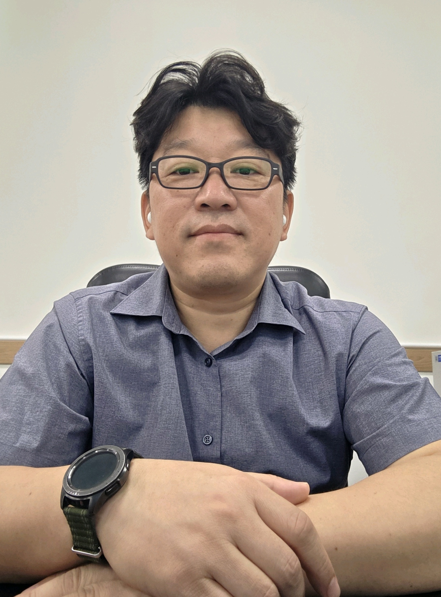

앞으로 함께 할 학부 연구원생 및 대학원생을 모집합니다.
KAIST에서 학부부터 대학원까지 이동로봇과 로봇매니퓰레이터의 경로설계와 제어를 공부하였고,
자동차부터 다개체로봇까지 다양한 대상체에 대한 위치인식을 연구한 후 졸업하였습니다.
졸업후, 로봇·반도체·가전 세개의 산업 현장에서 스타트업과 대기업을 모두 경험하며 30년을 보냈습니다.
또한 KAIST에서는 SW기반으로 연구했고, 유진로봇에서는 회로설계팀장으로 회로설계와 F/W개발을 하였고,
삼성전자에서는 기구설계 리더를 하여, 로봇개발에 필요한 기구/회로/SW 세가지 분야를 모두 경험할 수 있었습니다.
특히, 삼성전자에서는 전사 연구소의 선행기술 개발부터 사업부의 양산개발까지 제품개발 전 과정에 참여하였고,
이후 상무 5년동안 상품기획부터 개발/품질/양산/공급/판매/사후관리까지의 전 단계를 관리하며 신기술의
제품화/사업화를 추진하였습니다.
이제 이러한 경험을 바탕으로, 이론과 현업을 연결하여, Physical AI로 다가오는 로봇기술의 새로운 응용연구를 여러분들과 함께 진행하고자 합니다.

2026년 11월부터 함께하는 대학원생입니다.
2026년 11월부터 함께하는 학부연구원생입니다.
산업 현장 경험을 갖춘 초빙연구원입니다.
졸업생 배출 이후 진로와 성과가 이곳에 기록됩니다.
로봇청소기를 처음 양산하고, 반도체 설비를 국산화하고, 대기업 사업부를 이끌어 온 과정에서 겪은 것은 이론과 현장 사이의 간극이었습니다. 이 연구실의 학생들은 논문을 쓰는 법뿐 아니라, 그 결과가 실제 제품과 공정에서 어떻게 검증되고 제품화되는지를 함께 배우게 됩니다.
관심 있는 분은 이메일로 자유롭게 문의해 주세요. 학부연구생·석·박사 과정 모두 모집합니다.